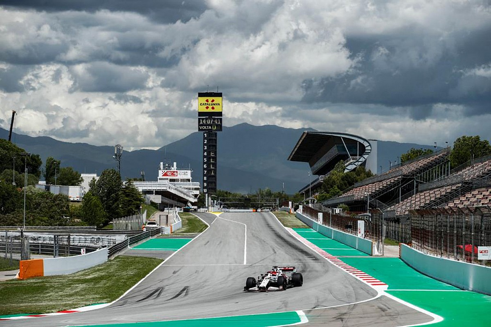

¿Qué es la Fórmula 1?
La Fórmula 1 es el pináculo del automovilismo, un deporte donde la velocidad, la innovación tecnológica y la destreza de los pilotos se unen para crear una experiencia única. Desde sus humildes comienzos en 1950, con el Gran Premio de Gran Bretaña como la primera carrera oficial, la F1 se ha transformado en un espectáculo global con millones de aficionados en todo el mundo. Equipos de renombre como Ferrari, McLaren, Mercedes y Red Bull han jugado un papel crucial en la evolución del deporte, mientras que pilotos legendarios como Ayrton Senna, Michael Schumacher y Lewis Hamilton han elevado la Fórmula 1 al nivel de arte. La combinación de tecnología punta y competencia extrema hace de la Fórmula 1 un deporte único en su clase.
¿Por qué es emocionante?
Cada carrera es un desafío lleno de adrenalina, con pilotos que compiten al límite de sus habilidades y escuderías que invierten millones en perfeccionar cada milímetro de sus máquinas. La estrategia, el rendimiento del coche y la destreza al volante son elementos cruciales que deciden cada milésima de segundo en la pista. Circuitos icónicos como Monza, conocido como el "Templo de la Velocidad", y Spa-Francorchamps, famoso por su desafiante curva Eau Rouge, son testigos de batallas épicas y momentos inolvidables que permanecen en la historia del deporte. Además, la Fórmula 1 no solo se limita a la emoción en pista; sus innovaciones tecnológicas, como los sistemas híbridos y la aerodinámica avanzada, a menudo encuentran su camino hacia los coches de calle, conectando el mundo del automovilismo con la vida cotidiana.
Un deporte de precisión
Detrás de cada monoplaza hay un ejército de ingenieros, diseñadores y mecánicos que trabajan incansablemente para empujar los límites de la física y la ingeniería. Estos vehículos, que alcanzan velocidades superiores a los 300 km/h, son el resultado de cientos de horas de simulaciones, pruebas en túneles de viento y el uso de materiales avanzados como la fibra de carbono, que combina ligereza y resistencia extrema. Cada componente del coche, desde el motor híbrido hasta el alerón trasero, está optimizado al máximo para garantizar el mejor rendimiento. La Fórmula 1 no solo es una competición; es un laboratorio de innovación que influye directamente en la tecnología de los autos que conducimos todos los días, introduciendo avances como los sistemas de recuperación de energía (ERS), frenos de carbono y mejoras en la aerodinámica. Este deporte también impulsa el desarrollo de tecnologías sostenibles, como los combustibles sintéticos y motores más eficientes, demostrando que la pasión por la velocidad puede ir de la mano con la responsabilidad ambiental.